Katori, Chiba: things to do, food and stays
Katori · Chiba
Katori
Highlighted on the Chiba map.

Stay
佐原商家町ホテル NIPPONIA
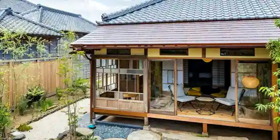
Sawara Shoka Machi Hotel NIPPONIA
オーベルジュ・ド・マノワール吉庭
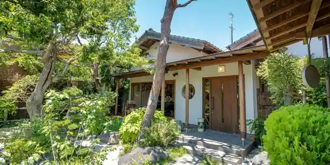
Oberuju Do Manowaru Kichi Niwa
ホテルルートイン香取佐原駅前
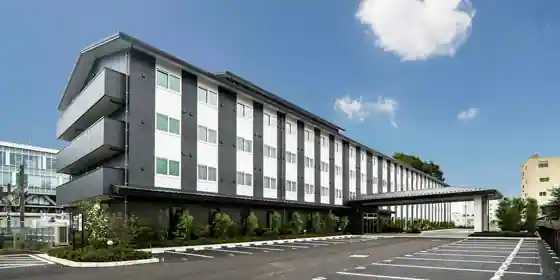
Hotel Route Inn Katori Sawara Ekimae
Hotel in Sawarai, Katori with buffet meals and breakfast available.
佐原北ホテル
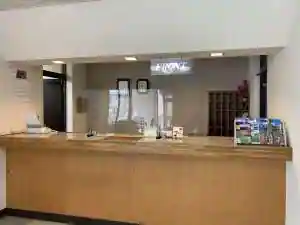
Sawara Kita Hotel
Hotel in Kita, Katori with business travelers and long stays.
ＨＯＳＴＥＬ Ｃｏ－ＥＤＯ
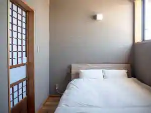
HOSTEL Co-EDO
佐原商家町ホテル ＮＩＰＰＯＮＩＡ
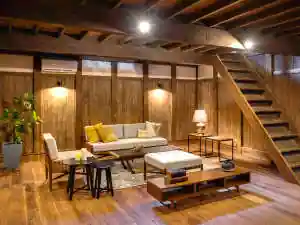
Sawara Shoka Machi Hotel NIPPONIA
HOTEL HOUSEN ホテル朋泉 佐原（千葉県）
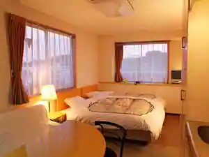
HOTEL HOUSEN Hotel Tomo Izumi Sawara (Chibaken)
Hotel in Sawaraho, Katori with business travelers.
香取はちさんろく
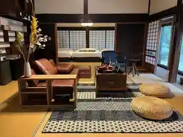
Katori Hachisanroku
Inn in Oto, Katori with a renovated traditional house.
いいおかや
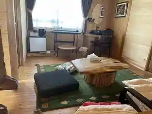
Iokaya
水の郷リトリート 再
Mizu No Sato Ritorito Sai
Inn in Ogishima, Katori with a retreat concept.
THE FARM
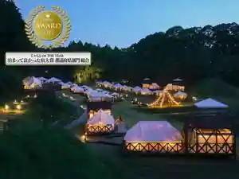
THE FARM
成田の森カントリークラブ
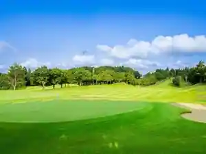
Narita No Mori Kantorikurabu
Inn in Yamakura, Katori; 30-minute drive from Okurumadenaritakuko30Funsawara Station.
Dining
うなせん
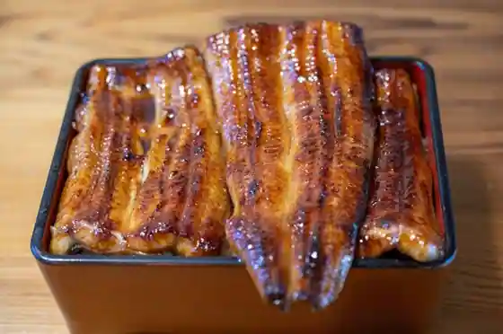
Unasen
うなぎ割烹山田
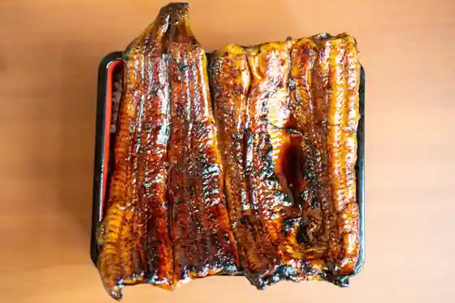
Unagi Kappo Yamada
別館山田
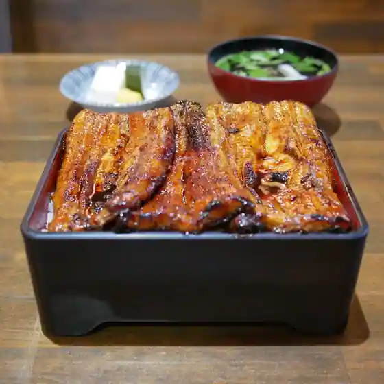
Bekkan Yamada
ルアン 佐原商家町ホテル NIPPONIA
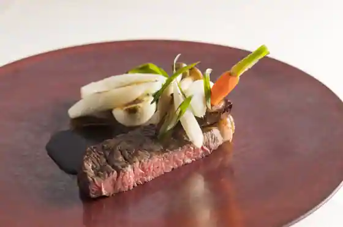
Ruan Sawara Shoka Machi Hotel NIPPONIA
麻生屋本店
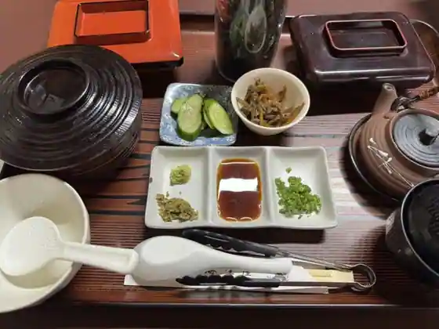
Aso Ya Hon
新館 山田うなぎ
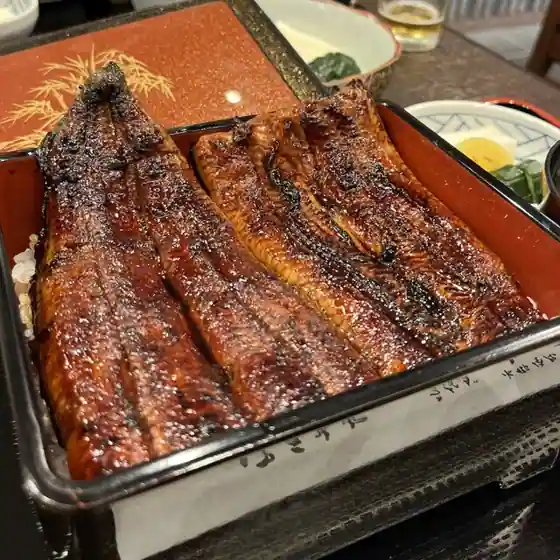
Shinkan Yamada Unagi
リストランテ カーザ・アルべラータ
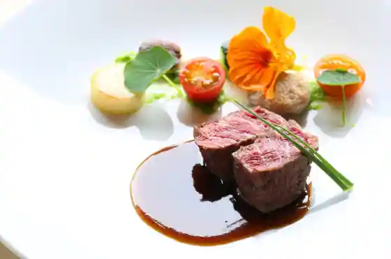
Risutorante Kaza Aru Be Rata
岩立本店
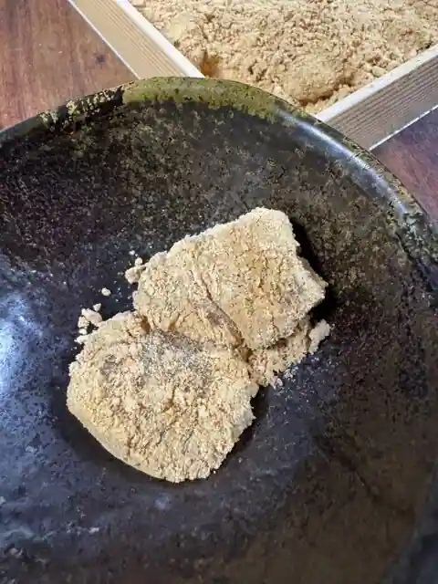
Iwatachi Hon
亀甲堂
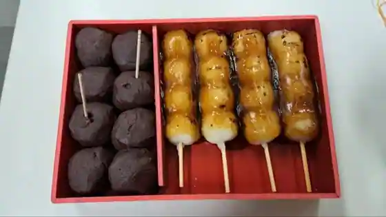
Kikko Do
柏屋もなか店
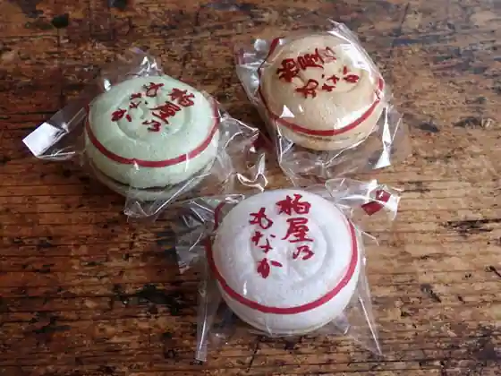
Kashiwa Ya Monaka
麻生屋 本橋元店
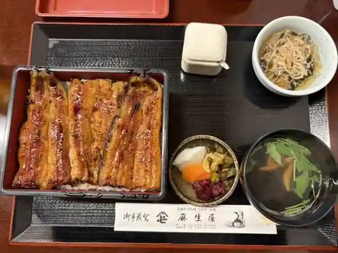
Aso Ya Motohashi Moto
いなえ
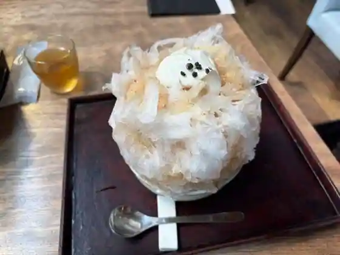
Inae
水郷のとりやさん 須田本店
Suigo Notoriyasan Suda Hon
恋する豚研究所
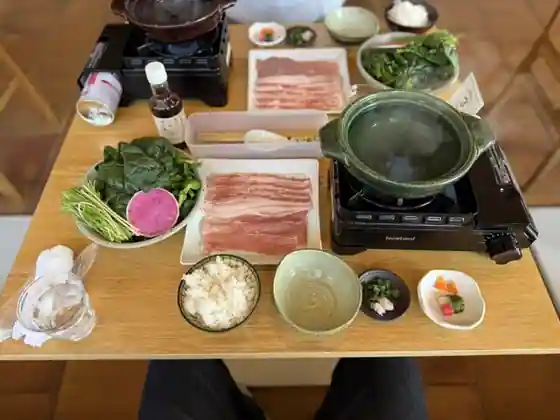
Koisuru Buta Kenkyusho
ザ ファームカフェ
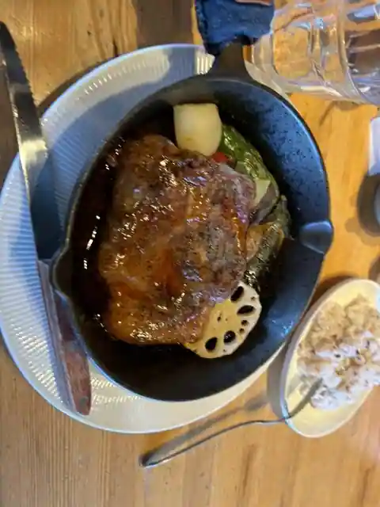
Za Famu Cafe
名古屋
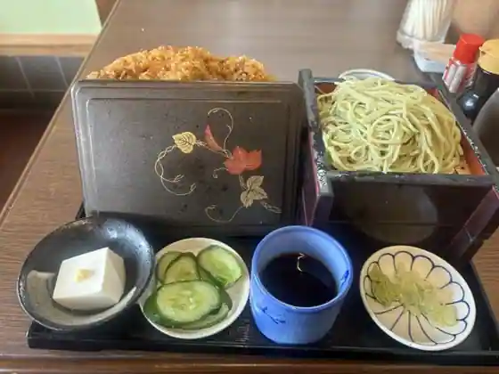
Nagoya
東洋軒
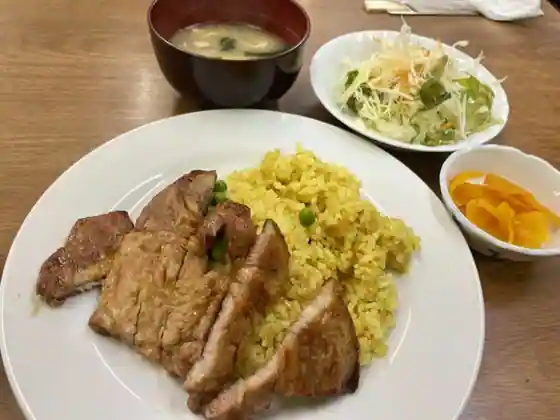
Toyo Ken
梅乃家本店
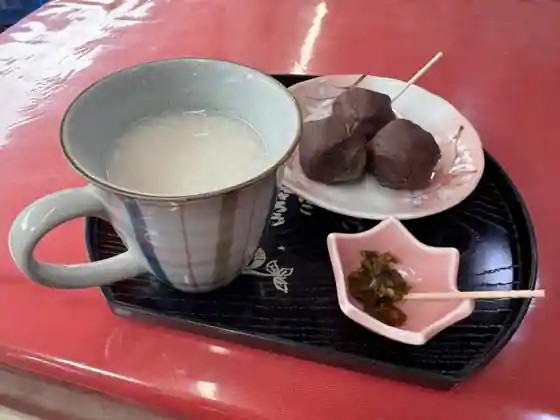
Umeno Kahon
支那そば へいきち 二代目
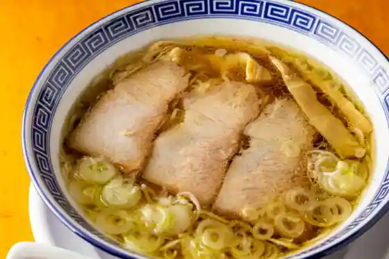
Shina Soba Heikichi Nidaime
和茶房 うの
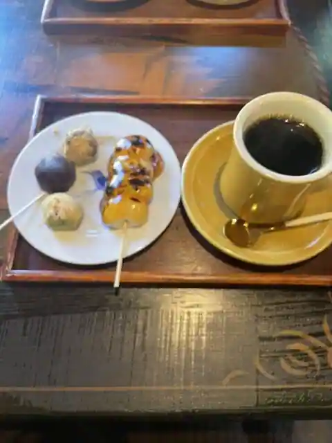
Kazusa Bo Uno
桶松
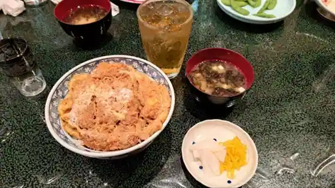
Oke Matsu
虎屋菓子舗
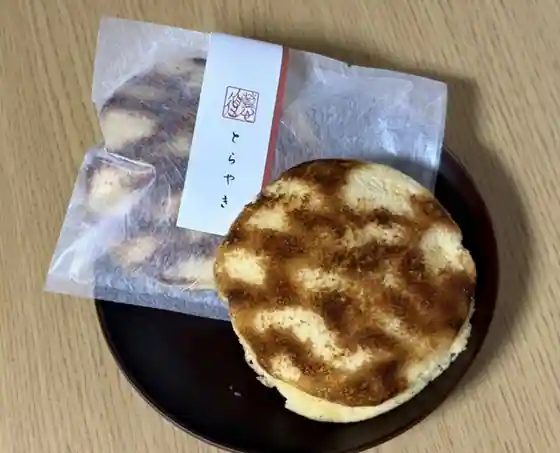
Tora Ya Kashi Ho
Noodles Labo 香蕎庵
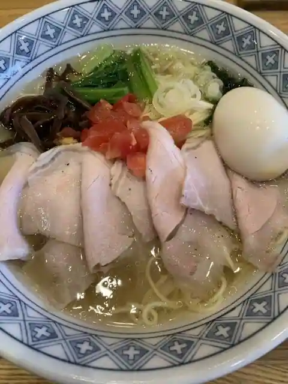
Noodles Labo Kaori Kyo Iori
Sights
Sazae Ko Sawara Fune Meguri
Ino Tadataka Memorial Museum

Katori Shrine

Ino Tadataka Kyutaku

Suigo Sawara Ayame Park

Roadside Station Kawa no Eki Mizu no Sato Sawara
Roadside Station Kurimoto Kurenai Sho Town no Sato
Suigo Sawara Dashi Hall
Sawara Town Ya Kan (Kamikawa Kishi Sho Park)
Kanpuku Tera
Sawara Streetscape Koryu Kan Sawara Mitsubishi Kan
Farm Resort THE FARM
Higashi Kaoru Shuzo
Omigawa Shiroyama Park
Kisetsu no Hana (Fuji) / Suigo Sawara Ayame Park
Yamasu Kura Fudo Village
Fu Uma no Dai Kusu
O no Farm